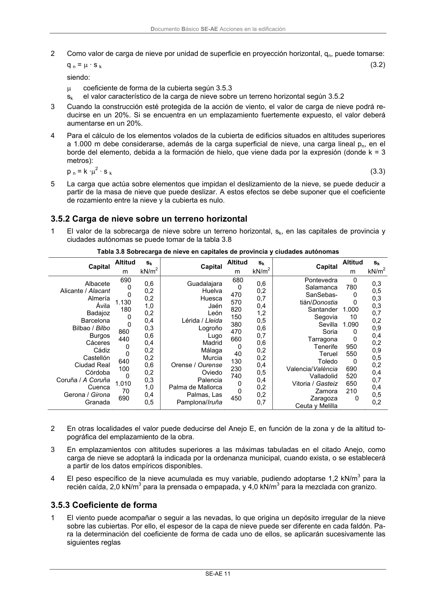

DB-SE-AE · 3.5.2 Carga de nieve sobre un terreno horizontal · 3.5.3 Coeficiente de forma · versión 2009-04
SHA256: 26116e5088955f0c6963a6187270cad282e1e7bf5a53a90f695c8fa50b4e4487 · página física 15 de 46 · métodos de encabezado
solo si están cotejados.
Formatos: Markdown · JSON de bloques · PDF p. 15 · imagen PNG
Documento Básico SE-AE Acciones en la edificación
SE-AE 11
2
Como valor de carga de nieve por unidad de superficie en proyección horizontal, qn, puede tomarse:
q n = µ · s k
(3.2)
siendo:
µ
coeficiente de forma de la cubierta según 3.5.3
sk
el valor característico de la carga de nieve sobre un terreno horizontal según 3.5.2
3
Cuando la construcción esté protegida de la acción de viento, el valor de carga de nieve podrá re-
ducirse en un 20%. Si se encuentra en un emplazamiento fuertemente expuesto, el valor deberá
aumentarse en un 20%.
4
Para el cálculo de los elementos volados de la cubierta de edificios situados en altitudes superiores
a 1.000 m debe considerarse, además de la carga superficial de nieve, una carga lineal pn, en el
borde del elemento, debida a la formación de hielo, que viene dada por la expresión (donde k = 3
metros):
p n = k ·µ2 · s k
(3.3)
5
La carga que actúa sobre elementos que impidan el deslizamiento de la nieve, se puede deducir a
partir de la masa de nieve que puede deslizar. A estos efectos se debe suponer que el coeficiente
de rozamiento entre la nieve y la cubierta es nulo.
3.5.2 Carga de nieve sobre un terreno horizontal
1
El valor de la sobrecarga de nieve sobre un terreno horizontal, sk, en las capitales de provincia y
ciudades autónomas se puede tomar de la tabla 3.8
Tabla 3.8 Sobrecarga de nieve en capitales de provincia y ciudades autónomas
Altitud
sk
Altitud
sk
Altitud
sk
Capital
m
kN/m2
Capital
m
kN/m2
Capital
m
kN/m2
Albacete
Alicante / Alacant
Almería
Ávila
Badajoz
Barcelona
Bilbao / Bilbo
Burgos
Cáceres
Cádiz
Castellón
Ciudad Real
Córdoba
Coruña / A Coruña
Cuenca
Gerona / Girona
Granada
690
0
0
1.130
180
0
0
860
440
0
0
640
100
0
1.010
70
690
0,6
0,2
0,2
1,0
0,2
0,4
0,3
0,6
0,4
0,2
0,2
0,6
0,2
0,3
1,0
0,4
0,5
Guadalajara
Huelva
Huesca
Jaén
León
Lérida / Lleida
Logroño
Lugo
Madrid
Málaga
Murcia
Orense / Ourense
Oviedo
Palencia
Palma de Mallorca
Palmas, Las
Pamplona/Iruña
680
0
470
570
820
150
380
470
660
0
40
130
230
740
0
0
450
0,6
0,2
0,7
0,4
1,2
0,5
0,6
0,7
0,6
0,2
0,2
0,4
0,5
0,4
0,2
0,2
0,7
Pontevedra
Salamanca
SanSebas-
tián/Donostia
Santander
Segovia
Sevilla
Soria
Tarragona
Tenerife
Teruel
Toledo
Valencia/València
Valladolid
Vitoria / Gasteiz
Zamora
Zaragoza
Ceuta y Melilla
0
780
0
0
1.000
10
1.090
0
0
950
550
0
690
520
650
210
0
0,3
0,5
0,3
0,3
0,7
0,2
0,9
0,4
0,2
0,9
0,5
0,2
0,4
0,7
0,4
0,5
0,2
2
En otras localidades el valor puede deducirse del Anejo E, en función de la zona y de la altitud to-
pográfica del emplazamiento de la obra.
3
En emplazamientos con altitudes superiores a las máximas tabuladas en el citado Anejo, como
carga de nieve se adoptará la indicada por la ordenanza municipal, cuando exista, o se establecerá
a partir de los datos empíricos disponibles.
4
El peso específico de la nieve acumulada es muy variable, pudiendo adoptarse 1,2 kN/m3 para la
recién caída, 2,0 kN/m3 para la prensada o empapada, y 4,0 kN/m3 para la mezclada con granizo.
3.5.3 Coeficiente de forma
1
El viento puede acompañar o seguir a las nevadas, lo que origina un depósito irregular de la nieve
sobre las cubiertas. Por ello, el espesor de la capa de nieve puede ser diferente en cada faldón. Pa-
ra la determinación del coeficiente de forma de cada uno de ellos, se aplicarán sucesivamente las
siguientes reglas
